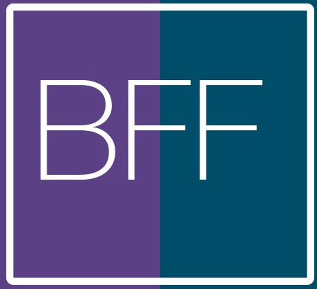

The most popular front-end framework for developing responsive, mobile first projects on the web.
Download Bootstrap Foundation Five
Currently v5.0.0
The most popular front-end framework for developing responsive, mobile first projects on the web.
Download Bootstrap Foundation Five
Currently v5.0.0
Bootstrap Foundation Five Designed for everyone, everywhere. Bootstrap Foundation Five makes front-end web development faster and easier. It's made for folks of all skill levels, devices of all shapes, and projects of all sizes.
In addition to vanilla CSS, Bootstrap Foundation Five includes support for the two most popular CSS preprocessors, Less and Sass.
Bootstrap Foundation Five easily and efficiently scales your project with one code base, from phones to tablets to desktops.
With Bootstrap Foundation Five, you get extensive and beautiful documentation with hundreds of live examples, code snippets, and more.
Bootstrap Foundation Five is open source. It's hosted, developed, and maintained on GitHub.
View the GitHub project